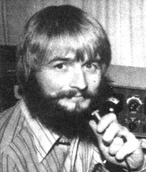
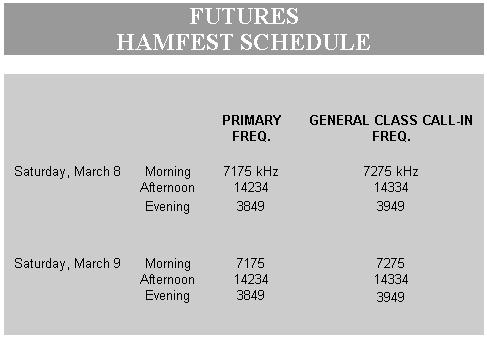

To involve those having General Class licenses, and still make slow-scan TV part of the week-end activities, we're going to try something new. The primary operating frequencies will be in the Advanced portions of the bands, just 4 kilohertz up-frequency from the usual SSTV gathering frequencies. Each moderator, however, will try to beg or borrow a second receiver which will be tuned to a specific General Class frequency in the band being used. In this way, the "Generals" can listen to what's happening on the primary frequency and still be able to reach the moderator with their questions and comments.
Among amateur radio's traditions are periodic get-togethers where hams from miles around meet to spend a sociable weekend, listen to talks on technical topics, look at the latest equipment and swap old parts and radio gear. These gatherings are usually called "hamfests".
On one of the West Coast New Directions Roundtable sessions, Ron Wilbur (K6ZEZ) made a suggestion which caught the imagination of the group: Why not hold a new kind of hamfest some weekend . . . an on-the-air event devoted to exploring the future? By planning well in advance and concentrating a lot of effort on that one occasion, we could line up various knowledgeable people to talk with us about our planet's problems. In addition, we could got a bunch of "doing" folks to rap with us about the approaches they personally are taking to meet those challenges.
Well, mark the weekend of March 8-9 on your calendar and start making preparations, 'cause that's when it's going to happen I The final schedule will depend on such factors as the number and location of stations willing to act as "moderators" or "facilitators" and the completed list of people who agree to share their insights with us. We can promise, though, that the sessions will cover a wide range of present and future concerns, including the environment, economics, the back-to-the-land movement, energy, women's issues, education and more.
The schedule I'm including with this column is as complete as it can be at present, with the Futures Hamfest project still in its early stages. Last-minute details can be obtained by sending a stamped selfaddressed envelope to Ron Wilbur (625 24th St, Hermosa Beach, Calif. 90254) or to me.
There are a number of ways to get involved in the Futures Hamfest. The most fundamental-if you have a ham license-is to join us on the air March 8 and 9. Another is to spread the word to your amateur acquaintances and get the general public interested (a good way to introduce people to ham radio at one of its better moments). You might, for instance, declare "open house" at your station throughout that weekend by giving advance word to your local newspaper. If you know other hams, see if they won't do the same. Any with SSTV gear would be especially welcome, since many presentations will be accompanied by slides, drawings and photos converted to slowscan for transmission.
Perhaps you're not a radio freak yourself but have something to contribute to a discussion of the future . . . or perhaps you know someone who does. In that case, you can still get into the act in any of three ways . . . the first of which is direct participation at some ham's station. (if you have any connection with a university, or live near one, perhaps you can stimulate the people involved with the campus station to join in that weekend.
) A second way for non-hams to contribute to the proceedings is by making a tape in advance. Such recordings can be in cassette or reel-toreel format. The length is flexible, but try to keep your comments on a given subject down to 10 minutes or less. (More complete presentations by people deeply into a given field will naturally be longer.) The interview approach seems to fit better with ham radio than the formal lecture. If you have an interesting tape, or are planning to make one, contact Ron Wilbur. He'll tell you where to send your contribution, and who will be converting the visuals-if any-to SSTV
M
. A third option-participation by phone patch-offers a whole range of possibilities, since Ron expects to have access to a WATS line during the Hamfest. Some folks will-be able to give their entire presentations by phone, and others who have pretaped their remarks can be called during the question-andanswer sessions. It may even be possible to tie regional nets together. Again, contact Ron Wilbur for more information.
First, the bad news: Randy Brink (WA7BKR), moderator of the West Coast roundtable, original "chairman" of the Futures Hamfest and one of New Directions' most active supporters, broke his back in a 50-foot fall from a tree . . . the very day he'd planned to leave for Spokane to do some Futures Hamfest taping during the last week of environmental sessions at Expo '74. Recovery will doubtless be slow, so I'm sure he'll be in the mood for any words of cheer you can muster. The good news is that Mitt Nodacker, who is coordinating the RTTY Technical Group, has sent out a newsletter to those who expressed interest in starting a "print" network by radio. If you'd like to see a copy, send your SASE to Mitt at Box 8557, Pocatello, Idaho 83209.
As I mentioned in MOTHER NO. 30, New Directions will be keeping a register of amateurs who are willing to share their communication facilities and serve as radio-accessed information resources. The first installment of that list is included in this issue.
Peace,
Cop Macdonald (WOORX)
P.O. Box 483
Rochester, Minnesota 55901
When circumstances permit, the following radio amateurs would like to offer the use of their stations free of charge to others. Certain of them also hope access to information in specific areas of interest, or to people with experience in particular fields. If asked, these hams will attempt to provide assistance in the categories listed. Contact individuals directly to make arrangements, (Also shown are the license class of the station, the bands and modes normally used and the availability of a phone patch. This information is given to facilitate schedule-making.)
VE7AIC, Norris E. Hyde, Box 227, Sicamous, B.C. V0E 2V0, Canada. Adv. Am.; 80 through 10; SSB and CW (RTTY coming up, then SSTV). Re-establishing on the land and related info on stock, etc. Getting by with unconventional farm equipment, and maybe a tip or two on the psychological aspect of the transition (city to rural).
KIVYQ, William J. Barrett, 9 Shields Lane, Ridgefield, Conn. 06877. Extra; all bands, especially 75 and 20; SSB; phone patch. Storage batteries and charging systems; solar heating; RIF communications, broadcasting, electronic circuit design; weather instrumentation; starting small businesses (including marketing and finance); auto mechanics (especially foreign cars); water power, including small hydroelectric plants.
W2EMS/9, Ted Phelps, 2S-262 Churchill Lane, Glen Ellyn, Ill. 60137. Extra; 80 through 10; CW (first choice), SSB. Impact of technology on society; sociology of the future. (Have a developing tape library on the above and am gradually acquiring more info.)
K8RBV, Robert E. Morgan, 2374 Queenstown Rd., Cleveland Heights, Ohio 44118. General; 40 through 2; all modes; phone patch. Education: all aspects, including teaching of ham radio and photography to elementary school children.
K8BRX, David E. Drake, 12341/2 Titus St., Traverse City, Mich. 49684. Advanced; 80 through 15 plus 6 and 2 FM; CW and FM; low power. General electronics.
W8REN, Dave Benedict, 2546 Cheswick, Troy, Mich. 48084. Advanced; 80 through 10; SSB and CW; phone patch. Alternative health care delivery.
WB9ICI, Daniel A. Gomez-Ibanez, Drawer 29, Cambridge, Wis. 53523. Advanced; 80 through 10; SSB; phone patch. I am a professor of Geography at U. of Wisconsin, Madison, where I teach courses on man-culture-environment relationships, population and historical geography. Research specialties: historical geography of rural Europe; demographic historical geography. Also working on energy; traditional agriculture; related themes.
WØORX, Cop Macdonald, P.O. Box 483, Rochester, Minn. 55901. Advanced; 80 through 10; SSTV and SSB; phone patch. Electronics; travel in Latin America; free/open schools; basic health info.
WB4BDO, Charles K. Brown, RR 1, Marion, Ky. 42064. Extra; 80 and 40 now, 20 through 10 later; SSB; phone patch. Gardening; edible wild foods. (Seven correspondents and I exchange plant specimens and info. We seek more exchanges with sincere individuals.)
WA4CCA, Jim Willis, P.O. Box 131, Killen, Ala. 35645. General; 80 through 10; SSB and CW (RTTY as soon as possible); phone patch. Math; physics; electrical engineering of buildings.
W4RQJ, Marshall R. Kitchen, Rt. 8, Box 230, Burlington, N.C. 27215. General; 75 through 10 plus 2; SSB and FM.
K4TWJ, Dave Ingram, Eastwood Village No. 604 North, Rt. 11, Box 499, Birmingham, Ala. 35210. Extra; 80 through 20 and 2; SSTV, SSB, CW, FM. Electronics (I teach a two-year engineering course); photography (I have connections with several professional photographers).
WA4YKA, Roy L. Moore, 242 Severin St., Chapel Hill, N.C. 27514. Advanced; 75; SSB. Photography; journalism; philately; numismatics; mass communication research.
WA5ACA, Joe Magee, P.O. Box 58951, Houston, Tex. 77058. Extra; 80 through 10 and 2; CW, SSB, FM. Computers; linear and digital IC's; photography; flying; astronomy; electronic construction (kit or from scratch).
WA5CCZ, Ray and Barbara Martin, 703 Little Doe St., Crosby, Tex. 77532. Advanced; 75 and 40; SSB; phone patch. Solar/wind power; methane, biogas, town gas generators; electronics/electrical generators; heating and cooling methods; engines; gas, diesel, steam.
Normand Audet, 27 Bomber Circle, Midwest City, Okla. 73110. Technical info on electronic parts, and sources of supply.
WA6DGV, Carter Rose, 27 Wilson St., Daly City, Calif. 94014. General; 80 through 10 and 2; CW and SSB. Physical energy cost and conservation; psychological energy cost and conservation; natural laws of communicating; art and technology (SSTV is art!); cooking without red meat, and being healthy; poetry, dancing (Tai-chi, etc.), yoga.
WB6QVZ, Robert A. Drifka, 5208 Lexington Ave., Los Angeles, Calif. 90029. Technician; currently not on air. Servicing of Motorola two-way radios; meteorology.
WA7BKR, Randy Brink, Rt. 2, Box 301-B, Port Orchard, Wash. 98366. Advanced; 75, 40, 20; SSB; phone patch. Alternative sources of energy (have operable wind generator); organic gardening; growing plants under artificial light; homesteading; philosophy; civil rights (am an officer in ACLU); color TV repair; boating (have held inland waters masters license).
WA2HVY/7, Mark Dankoff, Dorm 137, Prescott College, Prescott, Ariz. 86301. Advanced; 20 . . . more later; SSB. Organic gardening, ml Southwest; ecology and environmental problems; solar cooking; community studies; alternative education; mountaineering; outdoor (wilderness) education.
W6HSE, Burton W. Bogardus, 911 Cragmont Ave., Berkeley, Calif. 94708. Advanced, 75 through 10; SSB. Sociology (was speaker and broadcaster for Technocracy, social research organization); parapsychology (psychic research, ESP phenomena, alpha waves); theater and electronic organs. Have recycling center in apartment basement.
W6NPS, Carl H. Schwarzenberg, 708 Cottage St., Susanville, Calif. 96130. General, 80 through 10; SSB. Philosophy, especially religious philosophy; psychology (small group work, TA, etc.); photography; backpacking (northern California); music; mushrooms.
WØQPO/7, George A. Cummings, Rt. 2, Box 389-D, Kettle Falls, Wash. 99141. Extra; 80 through 10; CW and SSB. Ham radio; radio repair; mill-end house construction; some homesteading experience.
WBØAZR, Betty Jean Pennabecker ("B.J."), 1227 Locust, Denver, Colo. 80220. Advanced; 80, 40,15; CW only mode at present. Organic gardening; child development.
WAØRUS, John J. Browne, 628 Maxwell, Boulder, Colo. 80302. Conditional; 80 through 20 and 2; SSB, FM and RTTY. Solar and wind power systems; geodesic domes (our company, Earth Dynamics, Inc., has built over 30 dome homes.)
|
 |
 |
|